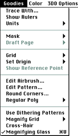

The figure below shows all commands in the Goodies menu. All Goodies menu commands
are covered in the Studio/32 manual.

Special mask features for working with animations
There are some mask features specific to animations:
Masks can only be applied on a frame-by-frame basis. You cannot apply
a mask simultaneously to multiple frames in an animation.
If you create a mask by selecting a color, the mask is calculated for
the current frame and is recalculated when you edit another frame in the
animation, if the option is chosen.